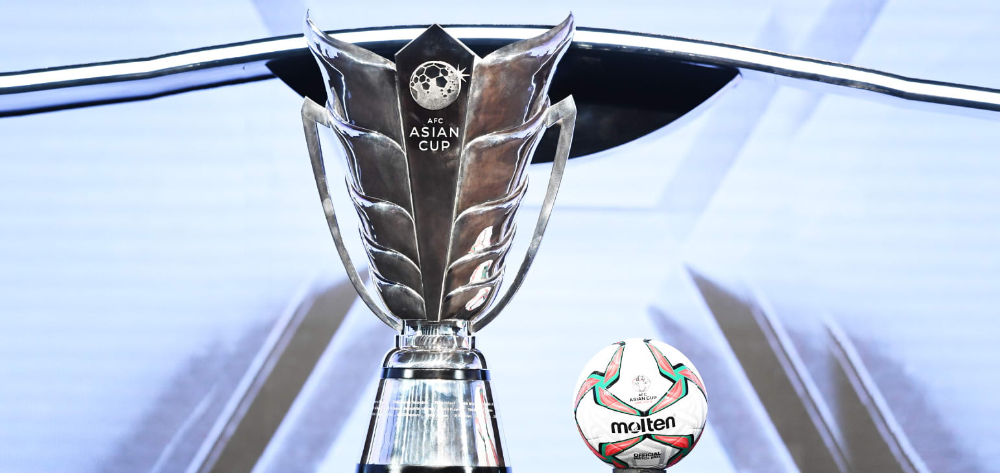
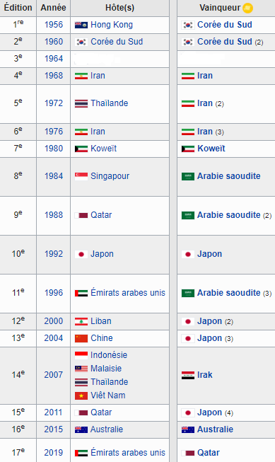

Coupe d'Asie des nations

La Coupe d'Asie des nations, parfois abrégée en CAN (à différencier de la Coupe d'Afrique des nations qui utilise le même abrégé), est une compétition de football qui oppose les meilleures équipes nationales des pays d'Asie.
Le vainqueur devient Champion d'Asie et représente communément le représentant de la Confédération asiatique (l'AFC) à la Coupe des confédérations organisée par la FIFA.
Historique
La Coupe d'Asie des nations est organisée par la Confédération asiatique de football depuis 1956. En 2004, l'AFC décide de décaler d'un an l'organisation de la 14e édition de l'épreuve pour éviter que le principal rendez-vous du football asiatique ne soit en concurrence médiatique avec les Jeux olympiques d'été et le Championnat d'Europe de football, organisés au cours de l'année 2008. Ainsi, la Coupe d'Asie des nations, prévue en 2008 en Indonésie, Malaisie, Thaïlande et Vietnam est donc avancée d'un an en 2007, dans une année sportive plutôt pauvre en évènements sportifs mondiaux. L'épreuve continue néanmoins à se tenir tous les quatre ans mais lors des années impaires. Le Japon, l'Arabie saoudite, l'Iran et la Corée du Sud sont les nations qui ont le plus brillé lors des quinze premières éditions de cette épreuve. La seizième édition s'est déroulée en Australie du 9 au 31 janvier 2015 et a vu le pays hôte s'imposer en finale contre la Corée du Sud (2-1 après prolongation). L'Australie, déjà championne d'Océanie, participe en effet à la Coupe d'Asie des nations depuis 2007 à la suite de son ralliement à la Confédération asiatique de football, le 1er janvier 2006. La 17e édition de la Coupe d'Asie des nations s'est déroulée aux Émirats arabes unis du 5 janvier au 1er février 2019. C'est la première édition qui réunit 24 équipes dans sa phase finale et voit le Qatar s'imposer en finale contre le Japon (3-1). Le Qatar – dont c'est le premier sacre continental – l'emporte en outre avec des statistiques remarquables (7 victoires en 7 matchs, 19 buts marqués contre un seul but encaissé).
